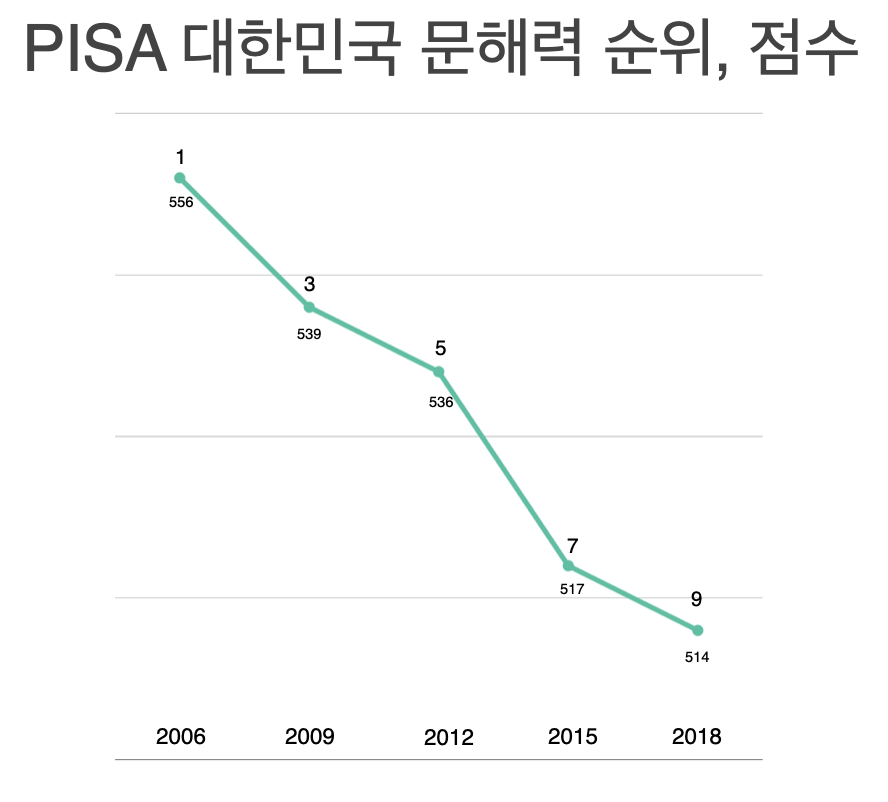

프로젝트 소개
"깊이읽기 경험에서 문해력 향상까지"
문해력이란?
글을 읽고 이해하는 것을 넘어
추론적, 비판적으로 사고할 수 있는 능력
추론적, 비판적으로 사고할 수 있는 능력
프로젝트를 시작한 이유
글을 읽기 싫어하고
읽지 못하는 학생들
읽지 못하는 학생들
보고서를 읽지 못해
어려운 업무
어려운 업무
사람들은 낮아지는 문해력으로 인해 수동적이고,
스스로 생각하지 못하는 사람이 된다
스스로 생각하지 못하는 사람이 된다
문해력 저하 현재 실태

낮아지는 PISA(읽기 소양 성취) 순위

문해력 미달 수준인 52%의 중3학생들

글을 읽고 쓰는데 어려운 73%의 성인
문제 발생 이유
최종 목표
사람들이 깊이읽기 방법을 알고 문해력을
증진시키는 것